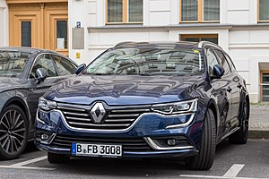

Automobil (zkráceně auto, z řeckého αυτός autos, sám, a latinského mobilis, pohyblivý) je dvoustopé osobní nebo nákladní silniční motorové vozidlo. Oproti této definici se mezi automobily obvykle neřadí autobusy. Jedná se o jeden z mnoha dopravních prostředků. Rozdělují se dle druhu pohonu, např. parní stroj, dieselové, zážehové, elektro aj.
Vzdálenost os přední a zadní nápravy.
Vzdálenost středů otisků pneumatik jedné nápravy. Rozchod přední a zadní nápravy vozidla se zpravidla liší.
Vzdálenost svislých rovin, které se dotýkají předního a zadního konce vozidla.
Do šířky se nezapočítávají zpětná zrcátka, obrysová a směrová světla, pružné části apod.
Výška se měří při pohotovostní hmotnosti automobilu.
Vzdálenost od svislé roviny procházející osou kola k nejvzdálenějšímu bodu na přední/zadní části vozidla.
Určuje se při maximálním zatížení vozidla. Je to úhel mezi podložkou a rovinou, která je tečná k pneumatikám a neleží pod ní žádný bod karoserie před/za nápravou.
Vzdálenost nejnižšího bodu podvozku nebo karoserie od vozovky, měří se při zatížení automobilu maximální povolenou užitečnou hmotností.
| třída | mini | nižší | nižší střední |
|---|---|---|---|
| Skupina | A | B | C |
| Skupina | 1 | 2 | 3.1 , 3.2 |
| Délka | 900 | 4300 | 4500, 4600 |